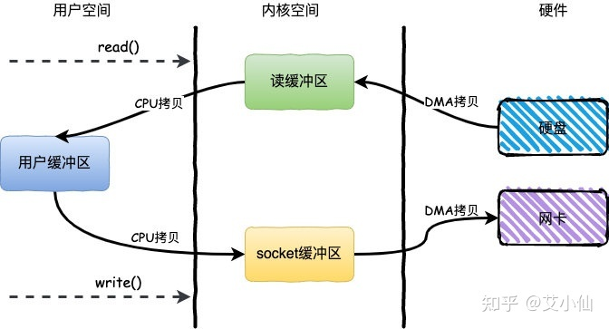
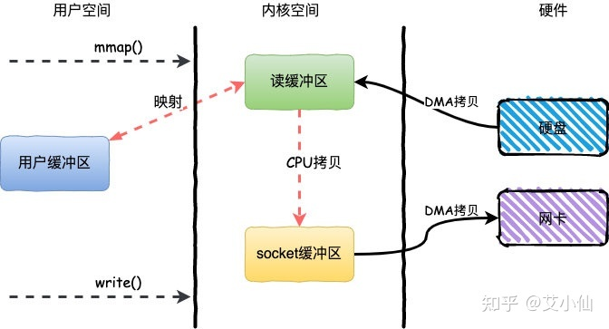
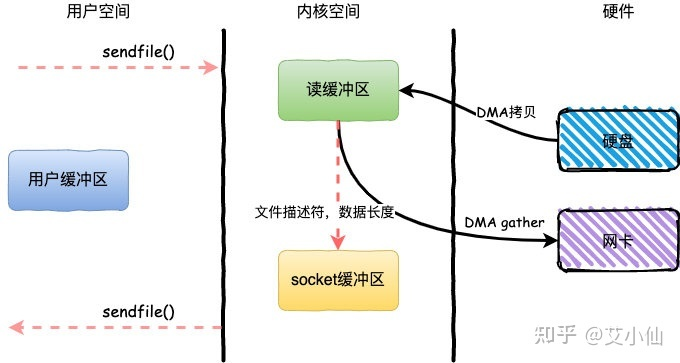

高级IO函数¶
《Linux高性能服务器编程》 - 游双 第6章，以及《小林coding - 网络系统》的读书笔记，本文中的所有代码可在GitHub仓库中找到
pipe函数¶
pipe¶
#include <unistd.h>
// 打开一个管道
// fd[0] - 管道读端
// fd[1] - 管道写端
// 如果管道中没有数据，读操作阻塞
// 如果所有写端被关闭，读操作返回零
// 如果所有读端被关闭，写操作失败，并触发`SIGPIPE`信号
int pipe(int fd[2]);
例子"pipe"，实现了子进程同步读取父进程往管道中写入的数据：
#define MSGSIZE 16
const char *msg1 = "hello, world #1";
const char *msg2 = "hello, world #2";
void write_data(int write_fd)
{
printf("Parent Task Starts\n");
int nbytes = write(write_fd, msg1, MSGSIZE);
printf("parent process wrote %d bytes to child process: %s\n", nbytes, msg1);
nbytes = write(write_fd, msg2, MSGSIZE);
printf("parent process wrote %d bytes to child process: %s\n", nbytes, msg2);
printf("Parent Task Ends\n");
}
void read_data(int read_fd)
{
printf("Child Task Starts\n");
char inbuf[MSGSIZE];
int nbytes = 0;
while ((nbytes = read(read_fd, inbuf, MSGSIZE)) > 0)
printf("child process read %d bytes to from parent process: %s\n", nbytes, inbuf);
printf("Child Task Ends\n");
}
int main(int argc, char **argv)
{
int fd[2];
pipe(fd);
int read_fd = fd[0];
int write_fd = fd[1];
pid_t pid = fork();
if (pid == 0)
{
close(write_fd);
read_data(read_fd);
close(read_fd);
return 0;
}
close(read_fd);
sleep(1);
write_data(write_fd);
close(write_fd);
wait(NULL);
return 0;
}
> ./main
Child Task Starts
Parent Task Starts
parent process wrote 16 bytes to child process: hello, world #1
parent process wrote 16 bytes to child process: hello, world #2
Parent Task Ends
child process read 16 bytes to from parent process: hello, world #1
child process read 16 bytes to from parent process: hello, world #2
Child Task Ends
socketpair¶
#include <sys/socket.h>
// 创建双向管道
// domain - 只能是UNIX本地协议族AF_UNIX
// type, protocol - 本地协议族的参数
// fd[2] - 管道的两端，都可读可写，一端写，必须从另一端读，反之亦然。
// 如果管道中没有数据，读操作阻塞
// 如果管道一端的文件描述符都被关闭，则另一端的读操作返回零
int socketpair(int domain, int type, int protocol, int fd[2]);
例子"socketpair"，实现了在两个进程间传递数据：
#define MSGSIZE 16
const char *msg1 = "hello, world #1";
const char *msg2 = "hello, world #2";
void parent_rw(int socket)
{
printf("[Parent] Task Starts\n");
char inbuf[MSGSIZE];
int nbytes = read(socket, inbuf, MSGSIZE);
printf("[Parent] read %d bytes to from child process: %s\n", nbytes, inbuf);
nbytes = write(socket, msg1, MSGSIZE);
printf("[Parent] wrote %d bytes to child process: %s\n", nbytes, msg1);
printf("[Parent] Task Ends\n");
}
void child_wr(int socket)
{
printf("[Child] Task Starts\n");
int nbytes = write(socket, msg2, MSGSIZE);
printf("[Child] wrote %d bytes to parent process: %s\n", nbytes, msg2);
char inbuf[MSGSIZE];
nbytes = read(socket, inbuf, MSGSIZE);
printf("[Child] read %d bytes to from parent process: %s\n", nbytes, inbuf);
printf("[Child] Task Ends\n");
}
int main()
{
int fd[2];
socketpair(AF_UNIX, SOCK_STREAM, 0, fd);
const int parentSocket = 0;
const int childSocket = 1;
pid_t pid = fork();
if (pid == 0)
{
close(fd[parentSocket]);
child_wr(fd[childSocket]);
close(fd[childSocket]);
return 0;
}
close(fd[childSocket]);
sleep(1);
parent_rw(fd[parentSocket]);
close(fd[parentSocket]);
wait(NULL);
return 0;
}
> ./main
[Child] Task Starts
[Child] wrote 16 bytes to parent process: hello, world #2
[Parent] Task Starts
[Parent] read 16 bytes to from child process: hello, world #2
[Parent] wrote 16 bytes to child process: hello, world #1
[Parent] Task Ends
[Child] read 16 bytes to from parent process: hello, world #1
[Child] Task Ends
mkfifo¶
#include <sys/stat.h>
// 创建命名管道
// pathname - 命名管道文件名，需要保证在创建前不存在此文件
// mode - 文件属性
// 需要同时以“只读”和“只写”的方式打开命名管道，并在两边进行同步读写
int mkfifo(const char *pathname, mode_t mode);
例子"mkfifo"，创建了一个/tmp/fifo命名管道，并在两个进程中通过此管道同步数据：
#define NAMED_FIFO "/tmp/fifo"
#define MSGSIZE 16
const char *msg1 = "hello, world #1";
const char *msg2 = "hello, world #2";
void parent_rw()
{
printf("[Parent] Task Starts\n");
int fd_read = open(NAMED_FIFO, O_RDONLY);
char inbuf[MSGSIZE];
int nbytes = read(fd_read, inbuf, MSGSIZE);
printf("[Parent] read %d bytes to from child process: %s\n", nbytes, inbuf);
close(fd_read);
int fd_write = open(NAMED_FIFO, O_WRONLY);
nbytes = write(fd_write, msg1, MSGSIZE);
printf("[Parent] wrote %d bytes to child process: %s\n", nbytes, msg1);
close(fd_write);
printf("[Parent] Task Ends\n");
}
void child_wr()
{
printf("[Child] Task Starts\n");
int fd_write = open(NAMED_FIFO, O_WRONLY);
int nbytes = write(fd_write, msg2, MSGSIZE);
printf("[Child] wrote %d bytes to parent process: %s\n", nbytes, msg2);
close(fd_write);
int fd_read = open(NAMED_FIFO, O_RDONLY);
char inbuf[MSGSIZE];
nbytes = read(fd_read, inbuf, MSGSIZE);
printf("[Child] read %d bytes to from parent process: %s\n", nbytes, inbuf);
close(fd_read);
printf("[Child] Task Ends\n");
}
int main(int argc, char **argv)
{
int rc = mkfifo(NAMED_FIFO, 0777);
if (rc == -1)
{
perror(NAMED_FIFO);
return -1;
}
pid_t pid = fork();
if (pid == 0)
{
child_wr();
return 0;
}
sleep(1);
parent_rw();
wait(NULL);
unlink(NAMED_FIFO);
return 0;
}
> ./main
[Child] Task Starts
[Parent] Task Starts
[Child] wrote 16 bytes to parent process: hello, world #2
[Parent] read 16 bytes to from child process: hello, world #2
[Parent] wrote 16 bytes to child process: hello, world #1
[Child] read 16 bytes to from parent process: hello, world #1
[Child] Task Ends
[Parent] Task Ends
dup函数¶
dup¶
#include <unistd.h>
// 复制文件描述符，新的文件描述符的值由系统指定
// oldfd - 要复制的文件描述符
int dup(int oldfd);
const char msg1[] = "hello, world #1\n";
const char msg2[] = "hello, world #2\n";
int main()
{
int stdout_fd = 1;
int stdout_fd_copy = dup(stdout_fd);
printf("%s", msg1);
write(stdout_fd_copy, msg2, sizeof(msg2) - 1); // print to stdout
close(stdout_fd_copy);
return 0;
}
> ./main
hello, world #1
hello, world #2
dup2¶
#include <unistd.h>
// 复制文件描述符，新的文件描述符由用户传入
// oldfd - 要复制的文件描述符
// newfd - 新的文件描述符的值，如果有被此文件描述符打开的文件，会被关闭
int dup2(int oldfd, int newfd);
const char msg1[] = "hello, world #1\n";
const char msg2[] = "hello, world #2\n";
int main()
{
int fd = open("dup2.log", O_CREAT | O_WRONLY | O_APPEND, S_IRUSR | S_IWUSR | S_IRGRP | S_IROTH);
int stdout_fd = 1;
int rc = dup2(fd, stdout_fd);
printf("%s", msg1); // print to log file because the fd is redirected
fflush(stdout); // no flush will lose the data
write(stdout_fd, msg2, sizeof(msg2) - 1);
close(stdout_fd);
close(fd);
return 0;
}
> cat dup2.log
hello, world #1
hello, world #2
mmap函数¶
#include <sys/mman.h>
// 申请一块内存，可将这段内存作为进程间通信的共享内存，也可用将文件直接映射到用户空间
// start - 允许用户使用某个特定的地址作为这段内存的起始地址，NULL表示由系统分配
// length - 内存段长度
// prot - 设置内存段的访问权限
// flags - 控制内存段被修改后程序的行为
// MAP_SHARED - 在进程间共享这段内存，POSIX进程通信依赖此功能
// MAP_PRIVATE - 调用进程所私有
// MAP_ANONYMOUS / MAP_ANON - 内存段不是从文件映射而来，后两个参数被忽略，POSIX进程同步依赖此功能
// fd - 被映射文件对应的文件描述符
// offset - 从文件的何处开始映射
// 成功时返回指向目标内存区域的指针，失败时返回`MAP_FAILED`
void* mmap(void *start, size_t length, int prot, int flags, int fd, off_t offset);
mmap一般用在两个地方：
- 利用
mmap+write加速文件拷贝，实现零拷贝 - 在进程间共享内存，例如，POSIX进程间通信就依赖到了
mmap
零拷贝¶
正常文件拷贝，需要经过“用户缓冲区”，如下图：  图片来自文档
而在mmap的帮助下，不需要经过“用户缓冲区”，直接在内核空间通过CPU拷贝，从而减少了一次CPU的拷贝时间，如下图：

例子"mmap"，利用mmap实现了对文件的拷贝：
int main(int argc, char *argv[])
{
...
int fdin = open(in_filename, O_RDONLY);
int fdout = open(out_filename, O_RDWR | O_CREAT | O_TRUNC, S_IRUSR | S_IWUSR | S_IRGRP | S_IROTH);
struct stat statbuf;
fstat(fdin, &statbuf);
ftruncate(fdout, statbuf.st_size); // expand the space of the output file
// 映射输入文件到用户空间`src_ptr`
void *src_ptr = mmap(NULL, statbuf.st_size, PROT_READ, MAP_SHARED, fdin, 0);
// 映射输出文件到用户空间`dest_ptr`
void *dest_ptr = mmap(NULL, statbuf.st_size, PROT_READ | PROT_WRITE, MAP_SHARED, fdout, 0);
memcpy(dest_ptr, src_ptr, statbuf.st_size); // copy to output file
munmap(dest_ptr, statbuf.st_size);
munmap(src_ptr, statbuf.st_size);
return 0;
}
共享内存¶
进程间共享内存是mmap最重要的功能之一，匿名共享内存可用于父进程/子进程间的通信，而具名共享内存可以实现系统中任意进程间的通信。在“程序员的自我修养/并发”博文中，例举了各场景中mmap的作用：
sendfile函数¶
#include <sys/sendfile.h>
// 将一个真实文件的数据传递给一个socket
// out_fd - 必须是一个socket
// in_fd - 必须是一个真实文件的文件描述符，不能是socket或管道
ssize_t sendfile(int out_fd, int in_fd, off_t* offset, size_t count);
sendfile系统调用，就可以实现文件的拷贝动作。相比于mmap+write实现的零拷贝，sendfile同样只有一次CPU拷贝，并且只需要一次系统调用，从而减少了用户空间/内核空间上下文切换的次数。

例子"sendfile"，利用sendfile完成了服务器向客户端传递文件数据的功能：
int main(int argc, char* argv[])
{
...
int filefd = open(file_name, O_RDONLY);
struct stat stat_buf;
fstat(filefd, &stat_buf);
// start server listen socket
...
int connfd = accept(sock, (struct sockaddr*)&client, &client_addrlength);
sendfile(connfd, filefd, NULL, stat_buf.st_size);
close(connfd);
close(sock);
return 0;
}
> ./main 127.0.0.1 12345 ./in.txt
> telnet 127.0.0.1 12345
Trying 127.0.0.1...
Connected to 127.0.0.1.
Escape character is '^]'.
hello
world
Connection closed by foreign host.
copy_file_range函数¶
#include <unistd.h>
// 拷贝文件内容到另一个文件
ssize_t copy_file_range(int fd_in, off64_t *off_in,
int fd_out, off64_t *off_out,
size_t len, unsigned int flags);
copy_file_range函数没有sendfile函数对文件描述符的限制，可以在两个普通文件之间进行拷贝，参考例子"copy_file_range"：
int main(int argc, char *argv[])
{
...
int fd_in = open(argv[1], O_RDONLY);
struct stat stat;
fstat(fd_in, &stat);
int len = stat.st_size;
int fd_out = open(argv[2], O_CREAT | O_WRONLY | O_TRUNC, 0644);
int nBytes = 0;
do
{
nBytes = copy_file_range(fd_in, NULL, fd_out, NULL, len, 0);
len -= rc;
} while (len > 0 && nBytes > 0);
close(fd_in);
close(fd_out);
return 0;
}